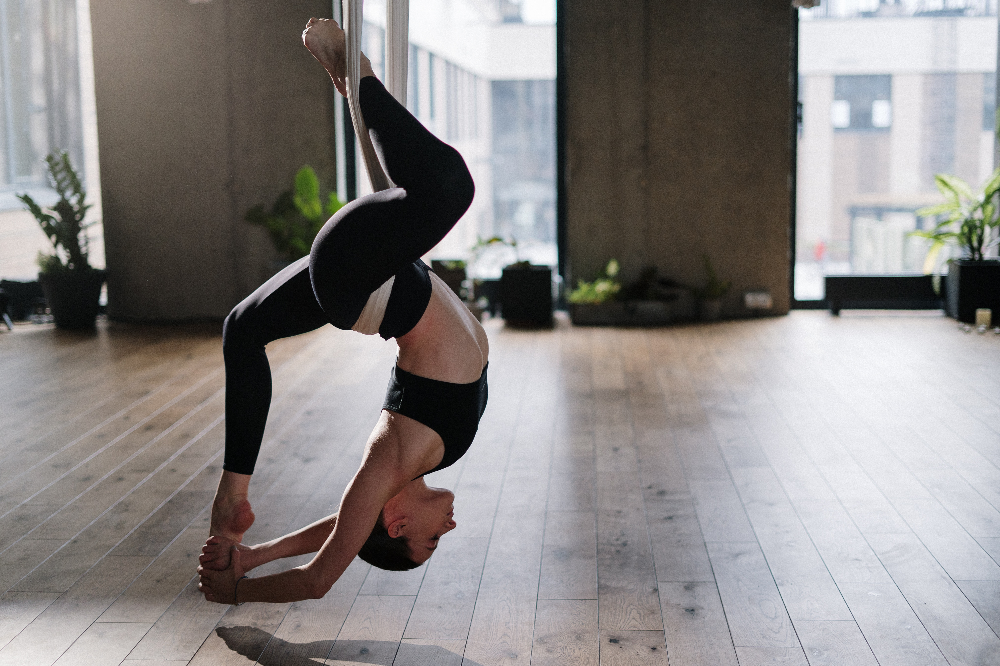

Yoga para niños

Es una disciplina adaptada y abordada desde el juego que permite que los niños conozcan su cuerpo y lo conecten con su mente. El manejo de la respiración y las diferentes posturas del yoga permiten que los niños desarrollen habilidades de concentración, atención, memoria y relajación.
El secreto está en que sea muy lúdica y divertida; esto también se logra a través de canciones, juegos e historias.
Hatha Yoga

Este estilo de yoga es un estilo clásico de posturas y técnicas de respiración. Su objetivo es crear un equilibrio entre las energías masculinas y femeninas que existen dentro de nosotros mismos. Además, también se utilizan las posturas de yoga para lograr el equilibrio entre la fuerza y la flexibilidad.
Aeroyoga

Es una modalidad del yoga, en donde las posturas o movimientos deben realizarse sobre un columpio formado por una tela, el cual se encuentra colgada del techo. Se trata de una variante muy física del yoga que va a permitir trabajar el cuerpo de una forma muy intensa, además de contar con el característico trabajo mental y espiritual propio de esta tradicional disciplina.
Yogaterapia

Se centra en la salud y el bienestar de la persona a todos los niveles. Ha sido utilizado con gran éxito para ayudar a controlar o tratar muchas enfermedades como el estrés, el insomnio, la ansiedad, la depresión, el dolor de espalda, diabetes, hipertensión, artritis, etc. Además, promueve cambios específicos en los músculos, las articulaciones y los órganos.